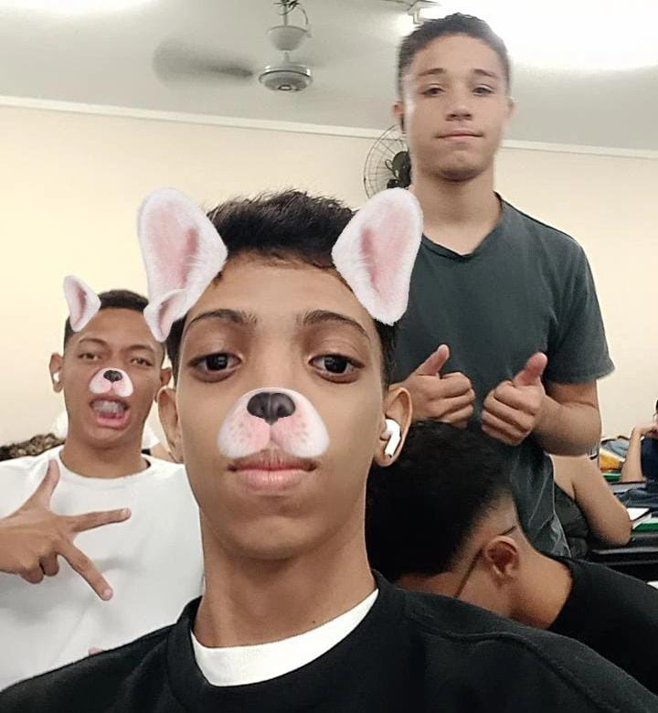
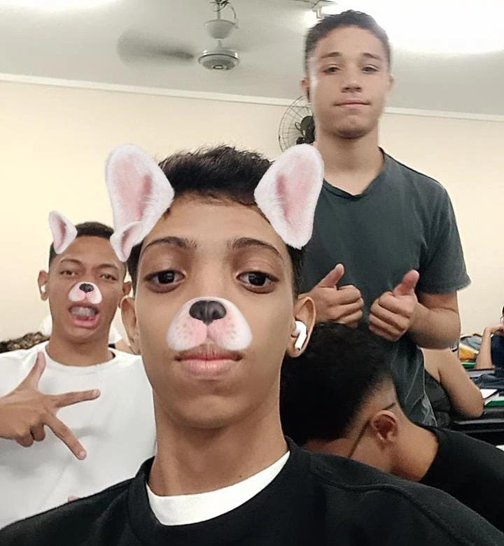

Despedida do Terceirão


 

FERIAS PERMANENTE DA ESCOLA KKKKKKK
Opa, rapaziada! Gostaria de agradecer por todos esses anos de estudo. Eu realmente ficava feliz de ir para a escola kkkkkk. Tanto para zoar e irritar as pessoas quanto para ver algumas pessoas com quem tenho amizade. Peço perdão por ter irritado em excesso; essa é minha forma de demonstrar carinho kkkkkkk. Para algumas pessoas, talvez nem seja por carinho kkkkkkkkk.
Desde já, quero agradecer pela paciência e pelas canetas, tanto deste ano quanto dos anteriores. Fiz muitas amizades, algumas boas. Obs: a maioria dos meus amigos era da escola. Só tenho a reclamar de alguns professores, mas, enfim, obrigado a todos e boa sorte para cada um. Que Deus abençoe vocês!
obs: vai ser adicionado mais fotos e umas zoações, pra descontrair.